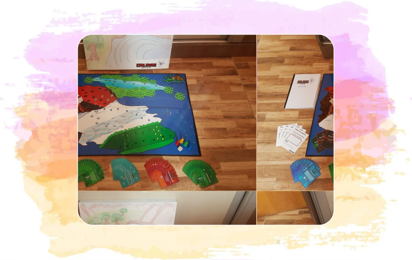

Meus Projetos
Seja muito bem-vindo(a)! ❤️
Nesse portifólio apresento alguns dos meus hobbies, como culinária e desenho, e também projetos que desenvolvi com amigos durante o curso técnico de Programação de Jogos Digitais no Instituto Federal do Paraná (IFPR).
Culinária: preparando doces e pães!

Uma das minhas paixões é a confeitaria, adoro comer e fazer doces, principalmente pelo cuidado com os detalhes na preparação. Algumas vezes me arrisco na confecção de pães, apesar de ser muitas horas de dedicação, o resultado sempre vale a pena no final!
Jogo de Tabuleiro: Evolution
Ano: 2016;
Desenvolvimento: em equipe;
Livro utilizado: FUTUYMA, Douglas. Biologia Evolutiva. Editora: FUNPEC, 3ªed., 2009;
Atuação: artista e game designer.
Projeto final da disciplina de Game Design, desenvolvido durante o curso de Programação de Jogos Digitais no IFPR. O objetivo do trabalho, era desenvolver um jogo de tabuleiro baseado no livro escolhido pela equipe.
Battle Cannon

Ano: 2016;
Desenvolvimento: individual;
Linguagem de Programação: C++;
Atuação: programadora e game designer.
Projeto final da disciplina de Programação, desenvolvido durante o curso de Programação de Jogos Digitais no IFPR. O propósito do jogo era demonstrar o movimento oblíquo em uma interface interativa.
Aqua Rode

Ano: 2017;
Desenvolvimento: individual;
Linguagem de Programação: C#;
Atuação: programadora e game designer.
Primeiro projeto desenvolvido na Unity para a disciplina de Programação de Jogos Digitais 2D e 3D, durante o curso de Jogos no IFPR. O intuito desse trabalho era desenvolver um jogo de plataforma com sistema de pontuação.
Pandora's Box: Haunted House

Ano: 2017;
Desenvolvimento: em equipe;
Linguagem de Programação: C#;
Atuação: artista e game designer.
Projeto criado na Unity para a disciplina de Programaçãode Jogos Digitais 2D e 3D, durante o curso de Jogos no IFPR. O objetivo desse trabalho era desenvolver um jogo com gráficos 2D e temática de terror.
Link de Acesso: https://github.com/abressam/pandoras-box
Relatos de um Trovador

Ano: 2018;
Desenvolvimento: em equipe;
Linguagem de Programação: C#;
Atuação: artista e game designer do conto de Dom Lancelote.
Trabalho de Conclusão de Curso do IFPR, realizado em conjunto com o projeto "Da arte narrativa tradicional à virtual: leitores, jogadores e programadores" e apresentado durante a Feira de Inovação Tecnológica - IFTech.
O objetivo do trabalho era construir um jogo didático, para ser aplicado em sala de aula na disciplina de Língua Portuguesa, com o intuito de ensinar o período do trovadorismo de forma divertida e dinâmica.
Link de Acesso: https://github.com/abressam/relatos-de-um-trovador
DAO

Ano: 2021;
Desenvolvimento: em equipe;
Linguagem de Programação: C#;
Atuação: artista.
Jogo desenvolvido durante a Global Game Jam 2021, a partir do tema "Lost and Found". A história é baseada em dois personagens, que uma vez separados, estão em busca um do outro para se tornarem completos novamente.
Link de Acesso: https://globalgamejam.org/2021/games/dao-7
Démodé - Global Game Jam 2022
Ano: 2022;
Desenvolvimento: em equipe;
Linguagem de Programação: C#;
Atuação: artista.
Jogo desenvolvido durante a Global Game Jam 2022, a partir do tema "Duality". A história é baseada em um personagem do início do século XX, que foi transportado para o futuro.
Link de Acesso: https://globalgamejam.org/2022/games/cybernoir-5
Modelagem 3D e Animação

Um dos meus primeiros projetos de animação 3D realizado durante a disciplina de Illustração e Modelagem, durante o curso de Jogos no IFPR. As práticas aprendidas nesse trabalho foram fundamentais para as modelagens do jogo "Relatos de um Trovador".
Illustrações
Por fim, apresento algumas ilustrações, onde eu realizei esboços de personagens, itens e cenários da maioria dos jogos mostrados anteriormente!